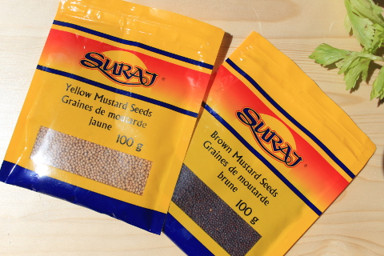
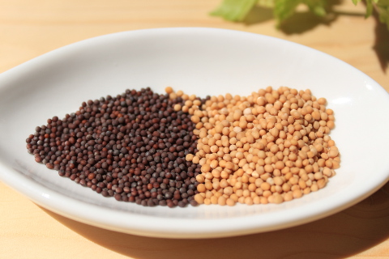
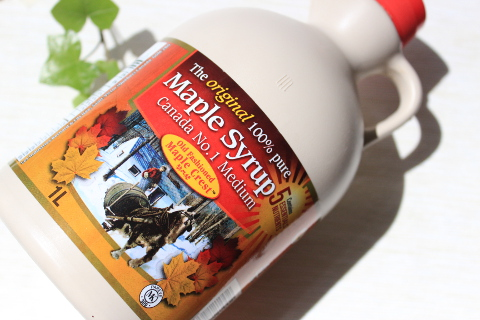

簡単！混ぜるだけの手作り粗挽き粒マスタードの作り方
買ってもいいけど、簡単に手作りできて、おいしいものって結構ある。そして、その上買うより安上がりだったり、添加物が入ってないぶん健康的だったりしていいことづくし。
粗挽き粒マスタードはその代表格。
お店で売られいるディジョンの粒マスタードってとてもおいしいけど、実は簡単に手作りできるのだ。
マスタードシードから作るのだが、マスタードシードはカナダではスーパーで手軽に、安く手に入れることができる。
お店ではイエローマスタードシードとブラウンマスタードシードの２種類が手に入る。一袋1ドル以下で買える。
↑左がブラウンマスタードシードで、右がイエローマスタードシード。
ブラウンマスタードシードの割合が高くなればなるほど辛くなり、イエローマスタードシードの割合が高くなると辛さはマイルドに。
我が家ではカナダらしくメープル風味で作るのが定番。メープルシロップの量はお好みで。
メープルシロップは良く使うので１Ｌの特大サイズを買っている。上の写真はLoblawsで購入したもので1リットルで１４ドルほど。特大サイズだが、グラムあたりでいえばどこの店よりも安い。容器はプラスチック。
サーモンバーガーやサーモンソーセージを食べるときはこの手作りマスタードにさらにメープルシロップを足してとろりとしたソースにしてかけるととてもおいしい。
材料；
マスタードシード ３５ｇ 酢 ６０ｇ メープルシロップ 小さじ１～お好みで 塩 小さじ１/２ ターメリック 小さじ１/２ （なくてもよい） 黒 こしょう少々
作り方；
マスタードシードと酢を一晩漬ける。 残りの材料をすべてマジックブレットに入れて混ぜる。すり鉢やミキサーでも。 ３日寝かせてできあがり。
お酢は白ワインビネガーでつくると酸味がよりマイルドに。
マジックブレット デラックス＜ブラック・パールピンク＞【ショップジャパン】【正規品】【ミキサー】【マジックブレッド】【マジブレ】マジックブレッド フードプロセッサー コンパクト 小型ミキサー
価格:10,780円 (2022/4/15 01:15時点) 感想(817件)